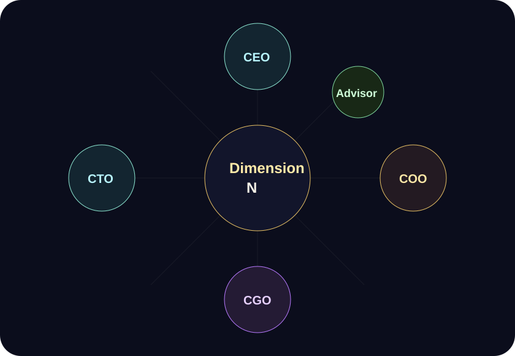

CEO / Party Lead
陳彥友
產品總指揮與跨域溝通者，負責品牌方向、整體提案與跨國/跨域協作整合。
- 國立中山大學資訊管理學系
- ASEP 亞洲學生交流計畫第一名
- 跨日協作設計實體桌遊
新版團隊頁把成員從履歷式清單改成「冒險隊配置」：每個人都有角色定位、核心能力與對產品負責的任務。

產品總指揮與跨域溝通者，負責品牌方向、整體提案與跨國/跨域協作整合。
市場調研與使用者體驗方向，負責營運節奏、需求洞察與早期驗證流程。
負責 UI/UX 設計與成長操作，將產品表現、流量獲取與使用者體驗串在一起。
技術實作主力，處理程式架構、提示詞工程、系統邏輯與資安控管。
長期投入在地文化轉譯與數位敘事教學，提供敘事轉譯、內容包裝與文化脈絡上的指導。
我們尋找的不只是玩家，而是願意一起把「中文 AI 跑團」推向內容平台的人：劇本作者、測試玩家、TRPG 社群主與前端/後端協作者。